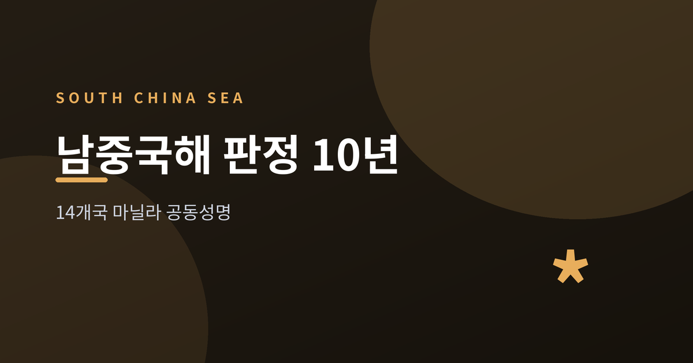
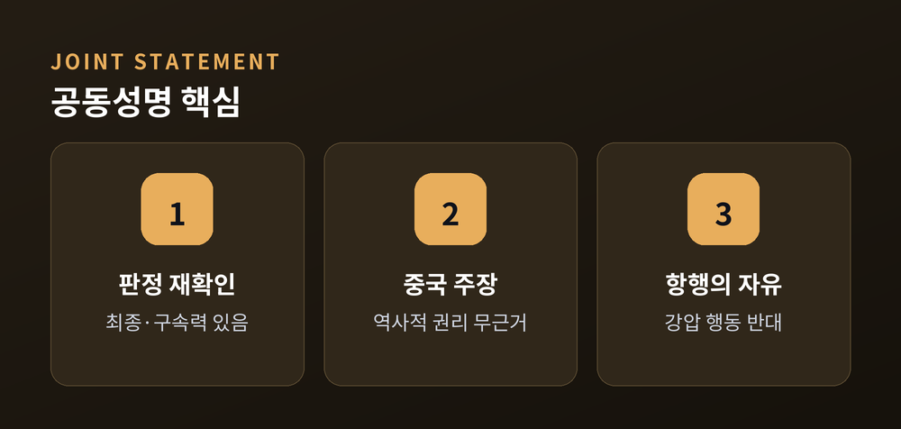
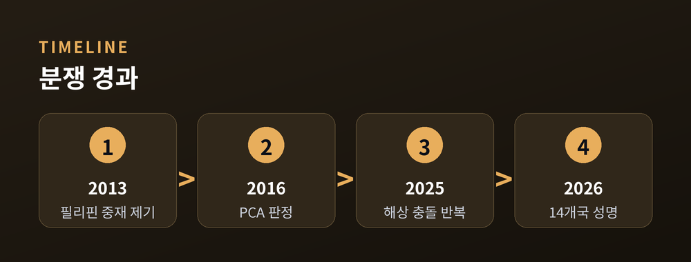
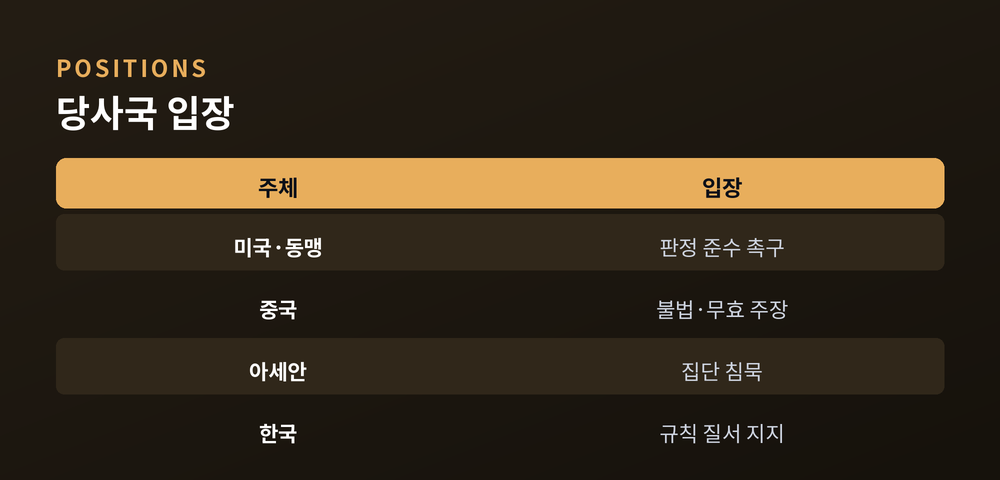
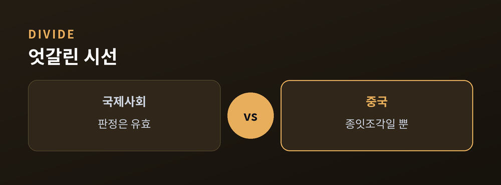

무슨 일이고 왜 중요한가
이번 글에서는 남중국해를 둘러싼 최근 갈등을 정리해 보겠습니다.
핵심부터 세 줄로 요약합니다.

2026년 7월, 14개국이 한목소리를 냈습니다.
미국 국무부가 공개한 공동성명에는 미국·호주·캐나다·독일·이탈리아·일본·영국·뉴질랜드·필리핀 등이 이름을 올렸습니다.
성명의 뼈대는 분명합니다.
2016년 7월 12일 상설중재재판소(PCA) 산하 중재재판부의 판정이 "중국과 필리핀 사이에서 최종적이고 법적 구속력을 지닌다"는 것입니다.
중국이 내세우는 '역사적 권리'에는 국제법상 근거가 없다는 판단도 다시 확인했습니다.
성명은 항행과 상공 비행의 자유를 강조하고, 무력·강압에 의한 일방적 행동에 반대한다고 밝혔습니다.
27개국 유럽연합(EU)도 판정을 "이정표적 결정"이라며 지지에 힘을 보탰습니다.

이 성명은 갑자기 나온 것이 아닙니다.
발단은 필리핀이 2013년 중국을 상대로 낸 중재 제기였습니다.
2016년 재판부는 만장일치로, 중국의 '구단선(九段線)' 주장이 유엔해양법협약(UNCLOS)상 근거가 없다고 판정했습니다.
남중국해는 스프래틀리 군도와 스카버러 암초 등을 두고 중국·필리핀·베트남 등이 얽힌 요충지입니다.
예전에는 외교적 신경전에 그쳤습니다. 지금은 바다 위 충돌로 번지고 있습니다.
2025년 이후 스카버러·세컨드토머스 암초 인근에서 중국 해경과 필리핀 함정의 물리적 마찰이 반복됐습니다. 물대포와 선박 충돌로 부상자가 나온 사례도 보고됐습니다.
이번 성명이 나온 시점도 우연이 아닙니다. 판정 10주년이라는 상징적 날짜에 맞춰, 판정의 효력을 다시 각인시키려는 외교적 계산이 깔려 있습니다.

같은 바다를 두고 시선은 크게 갈립니다.
미국과 동맹국은 판정을 "지켜야 할 규범"으로 봅니다. 강압을 멈추고 판정을 따르라는 촉구입니다.
중국은 정반대입니다. 판정을 "불법이고 무효이며 구속력 없는 종잇조각"이라 규정하고, 받아들이지도 인정하지도 않는다는 기존 입장을 되풀이했습니다. 남중국해에 대한 통치가 중단된 적 없다는 주장도 폈습니다.
중국은 성명에 참여한 주중 일본대사를 초치해 "일본은 당사국이 아니다"라며 강하게 항의했습니다.
아세안(ASEAN)은 조심스럽습니다. 만장일치 원칙 탓에 지난 10년간 판정을 집단으로 공식 인정한 적이 없습니다.
한국은 서명국에 포함되지 않았습니다. 다만 규칙 기반의 해양 질서를 지지한다는 입장을 별도로 밝힌 것으로 전해졌습니다.

남의 바다 이야기로만 보기는 어렵습니다.
한국이 쓰는 원유와 수출입 물동량의 상당 부분이 이 항로를 지납니다. 긴장이 높아지면 보험료 인상과 항로 우회로 통상 비용이 오를 수 있습니다.
더 큰 쟁점은 국제법의 무게입니다. 구속력 있는 판정을 강대국이 무시하는 선례가 굳어질지 여부이기 때문입니다.
다만 이번 성명에는 새로운 제재나 강제 조치가 담기지 않았습니다. 원칙을 재확인했을 뿐, 판정을 실제로 이행시킬 수단은 여전히 마땅치 않다는 한계가 남습니다.
앞으로도 성명전과 회색지대 압박이 이어질 가능성이 큽니다.
2026년 아세안 의장국인 필리핀은 남중국해 행동준칙(COC) 타결을 추진하지만, 판정 명시를 둘러싼 이견으로 연내 합의는 회의적이라는 전망이 많습니다.

정리하면 이렇습니다.
이번 성명은 새로운 제재가 아니라, 10년 전 판정을 다시 꺼내 든 원칙의 재확인입니다.
"판정은 유효하다"는 쪽과 "종잇조각일 뿐"이라는 쪽. 두 목소리는 당분간 평행선을 달릴 것입니다.
결국 시험대에 오른 것은 남중국해가 아니라, 규칙으로 다투기로 한 국제사회의 약속일지도 모릅니다.
참고 소스